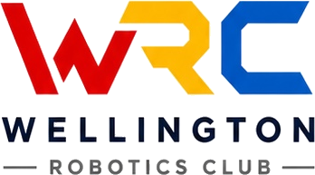

31Oct
2026
2026
VEX IQ at Scots College
VEX IQ competition at Scots College in Wellington.
- Time
- TBC
- Location
- Scots College, Wellington

BackUpcoming Events
Discover trial sessions, team training and community events designed for young robotics learners and their families.
Featured
Competition and training opportunities for WRC students and teams.
VEX IQ competition at Scots College in Wellington.
VEX IQ regional competition at College Street School.
New Zealand VEX IQ National Championships. Competition runs 12–13 Dec; check-in and inspection take place 11 Dec.